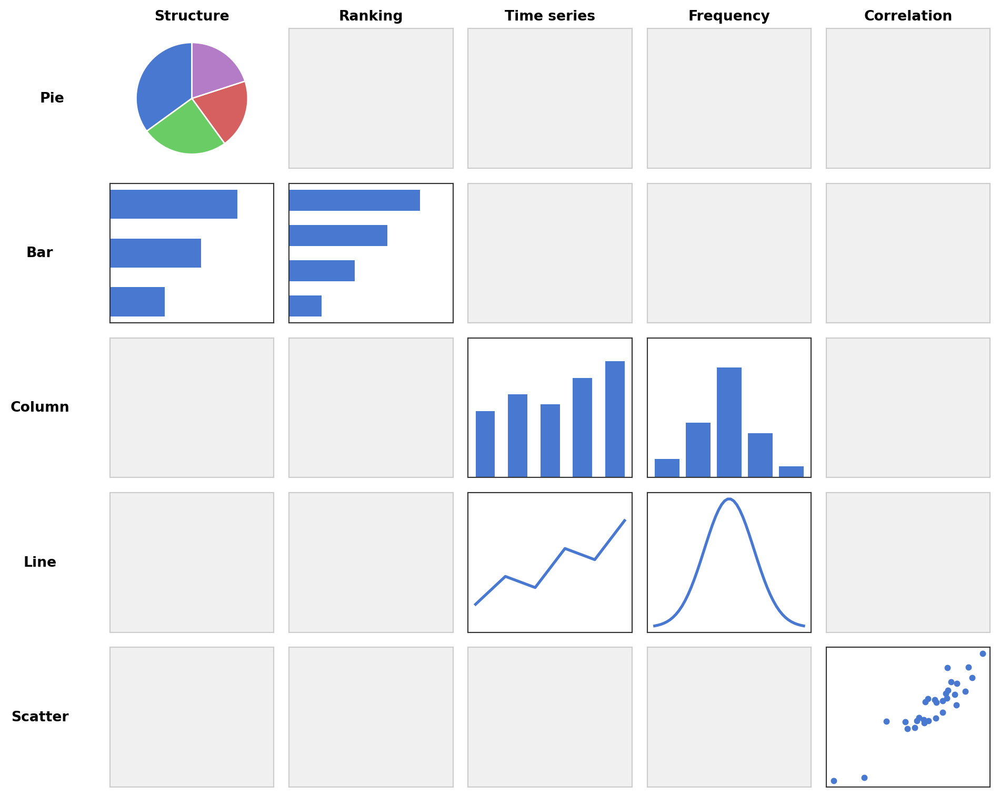
8 Visualizing data
In this chapter, we first discuss the general principles behind choosing the right chart type, and then learn how to create plots in Python using matplotlib.
8.1 Choosing the right chart
Before writing any code, it is worth thinking about what kind of chart best conveys your message. A useful framework (following Zelazny, Wie aus Zahlen Bilder werden) proceeds in three steps:
What is your message? The chart form should not be chosen based on the data alone, but on what you want to say about it. The same table of numbers can lead to very different charts depending on the message. A good chart title states the message, not just the topic — for example, “Revenue has doubled since January” instead of “Revenue overview”.
What type of comparison does your message involve? Every message implies one of five basic comparison types:
- Structure: What share does each part have of the whole? Keywords: share, percentage, proportion. Example: “Product A accounts for 70% of total revenue.”
- Ranking: How do items compare in size or order? Keywords: larger than, smaller than, equal. Example: “Region South has the highest sales.”
- Time series: How does a quantity change over time? Keywords: increase, decrease, trend, fluctuation. Example: “Revenue has grown steadily since January.”
- Frequency distribution: How are values distributed across ranges? Keywords: concentration, distribution, range. Example: “Most orders fall between 1,000 and 2,000 euros.”
- Correlation: Is there a relationship between two variables? Keywords: relates to, follows, independent of. Example: “There is no connection between experience and sales success.”
Which chart form fits the comparison type? There are five basic chart forms, and each is best suited for certain comparison types:
- Pie chart (Kreisdiagramm): Shows parts of a whole. Best for structure comparisons, but use sparingly — bar charts are almost always more readable. Limit to at most 5% of the charts in a report.
- Bar chart (Balkendiagramm, horizontal bars): Extremely versatile. Best for structure and ranking comparisons. Should make up about 25% of charts.
- Column chart (Säulendiagramm, vertical bars): The workhorse for time series and frequency distributions when the number of data points is small (up to about six).
- Line chart (Kurvendiagramm): Best for time series and frequency distributions with many data points. Together with column charts, these should cover about half of all charts.
- Scatter plot (Punktediagramm): Best for correlation comparisons. Also works for time series and frequency distributions with very many data points. About 10% of charts.
Beyond these five basic forms, two additional chart types are frequently used in data analysis:
- Heatmap: Displays a matrix of values as a grid of colored cells. Useful for correlation matrices, confusion matrices, or any data with two categorical axes where patterns emerge from color intensity.
- Error bar plot: Shows point estimates (e.g., means) together with uncertainty ranges (e.g., standard deviations or confidence intervals). Common in scientific and statistical contexts, especially for ranking comparisons where the uncertainty matters.
The following matrix (adapted from Zelazny) summarizes which chart form to use for which comparison type. Each cell contains a small example of the recommended chart form.
8.2 Plotting with matplotlib
The standard plotting library in Python is matplotlib. Its pyplot module provides a MATLAB-like interface. Here, plt refers to matplotlib.pyplot.
plt.figure(figsize=(w, h)): create a new figure with given size in inches.plt.xlabel(...),plt.ylabel(...),plt.title(...): axis labels and title.plt.legend(): show legend.plt.show(): display the figure.fig, axes = plt.subplots(nrows, ncols): create a figure with multiple subplots.plt.tight_layout(): automatically adjust spacing between subplots.plt.colorbar(): add a color bar to the current plot.
When using subplots, each axis object supports the same methods: axes.plot(), axes.bar(), axes.set_title(), axes.legend(), etc.
import numpy as np
import matplotlib.pyplot as plt
rng = np.random.default_rng(0)8.3 Line plots (plot)
A line plot connects data points with straight line segments. It is the standard chart for time series and continuous functions.
plt.plot(x, y, label=...): line plot.
x = np.linspace(0, 2 * np.pi, 100)
y = np.sin(x)
plt.figure(figsize=(6, 4))
plt.plot(x, y, label="sin(x)")
plt.xlabel("x")
plt.ylabel("y")
plt.title("A simple line plot")
plt.legend()
plt.show()
8.4 Scatter plots (scatter)
A scatter plot shows individual data points without connecting them. It is the primary chart for correlation comparisons.
plt.scatter(x, y, s=..., label=...): scatter plot (sis marker size).
x = rng.normal(size=100)
y = 2 * x + 0.5 * rng.normal(size=100)
plt.figure(figsize=(6, 4))
plt.scatter(x, y, s=20, label="data")
plt.xlabel("x")
plt.ylabel("y")
plt.title("A scatter plot")
plt.legend()
plt.show()
8.5 Pie charts (pie)
A pie chart shows parts of a whole. Use sparingly — bar charts are almost always more readable.
plt.pie(values, labels=...): pie chart. Useautopctto display percentages.
labels = ["North", "South", "East", "West"]
values = [13, 35, 27, 25]
plt.figure(figsize=(5, 5))
plt.pie(values, labels=labels, autopct="%1.0f%%")
plt.title("Revenue by region")
plt.show()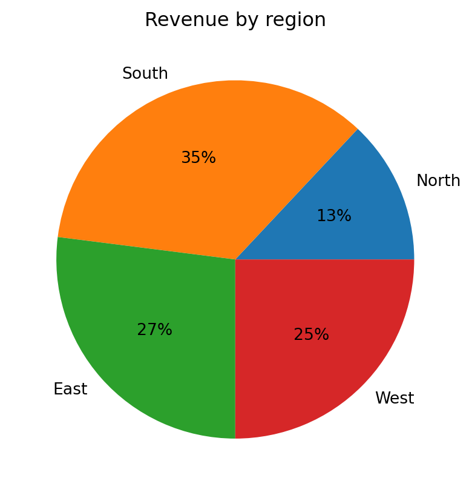
8.6 Bar charts (bar, barh)
Bar charts are the most versatile chart form, suitable for structure, ranking, and comparison tasks. Vertical bars are created with plt.bar, horizontal bars with plt.barh.
plt.bar(categories, values): vertical bar plot.plt.barh(categories, values): horizontal bar plot.
# horizontal bar chart (ranking)
categories = ["Product D", "Product C", "Product B", "Product A"]
values = [12, 23, 37, 45]
plt.figure(figsize=(6, 4))
plt.barh(categories, values)
plt.xlabel("Sales")
plt.title("Product A leads in sales")
plt.show()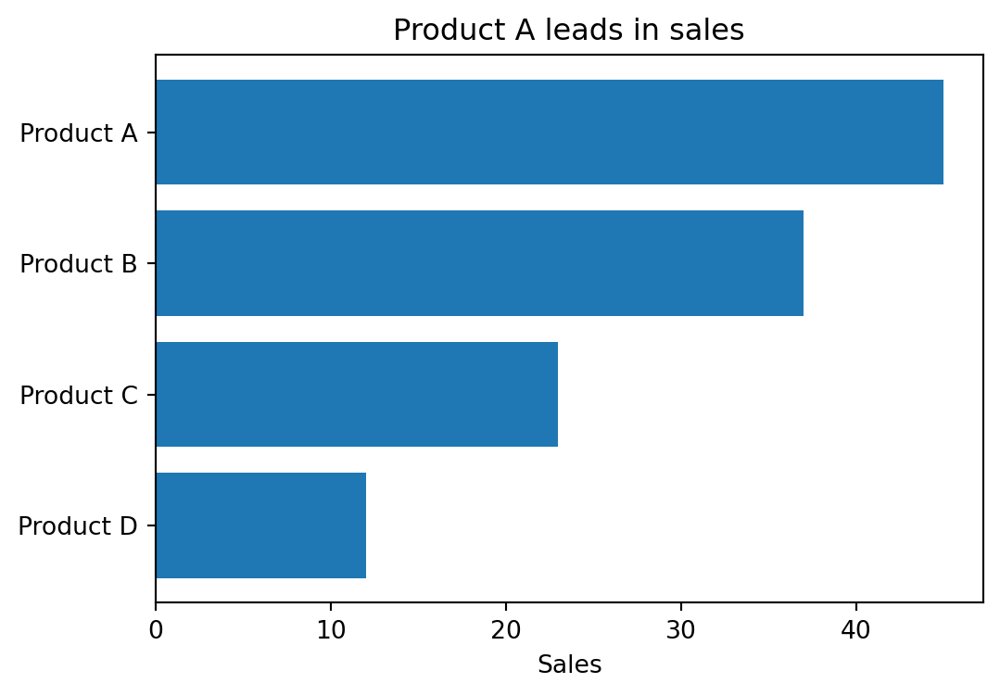
Bar charts become even more useful when comparing multiple series side by side, stacking them, or showing differences. To place two series next to each other, shift the bar positions by the bar width using np.arange.
# grouped bar chart: two series side by side
regions = ["North", "South", "East", "West"]
company_a = [13, 35, 27, 25]
company_b = [39, 6, 27, 28]
x = np.arange(len(regions))
width = 0.35
fig, ax = plt.subplots(figsize=(7, 4))
ax.bar(x - width/2, company_a, width, label="Company A")
ax.bar(x + width/2, company_b, width, label="Company B")
ax.set_xticks(x)
ax.set_xticklabels(regions)
ax.set_ylabel("Revenue share (%)")
ax.set_title("Revenue structure differs between companies")
ax.legend()
plt.show()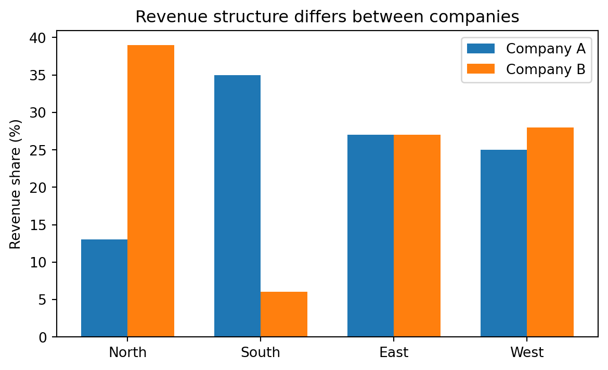
# stacked bar chart
fig, ax = plt.subplots(figsize=(7, 4))
ax.bar(regions, company_a, label="Company A")
ax.bar(regions, company_b, bottom=company_a, label="Company B")
ax.set_ylabel("Revenue share (%)")
ax.set_title("Combined revenue by region")
ax.legend()
plt.show()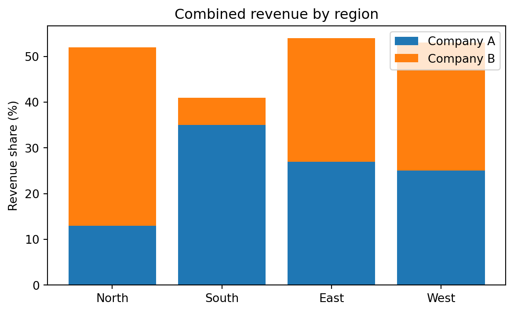
# difference chart: horizontal bars going left and right from a center axis
fig, ax = plt.subplots(figsize=(7, 4))
diff = [a - b for a, b in zip(company_a, company_b)]
colors = ["#4878cf" if d >= 0 else "#d65f5f" for d in diff]
ax.barh(regions, diff, color=colors)
ax.axvline(0, color="black", linewidth=0.8)
ax.set_xlabel("Difference (A − B)")
ax.set_title("Company A dominates in the South, Company B in the North")
plt.show()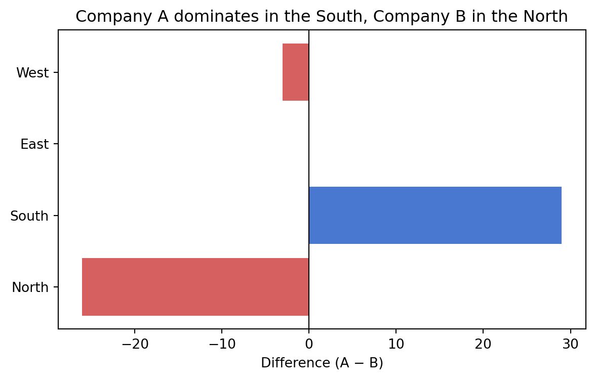
8.7 Histograms (hist)
A histogram groups numeric data into bins and shows the frequency or density of each bin. It is the standard chart for frequency distributions.
plt.hist(data, bins=..., density=...): histogram. Usedensity=Trueto normalize to a probability density.
data = rng.normal(loc=5, scale=2, size=500)
plt.figure(figsize=(6, 4))
plt.hist(data, bins=30, density=True, alpha=0.7, label="histogram")
plt.xlabel("x")
plt.ylabel("density")
plt.title("Histogram of normally distributed data")
plt.legend()
plt.show()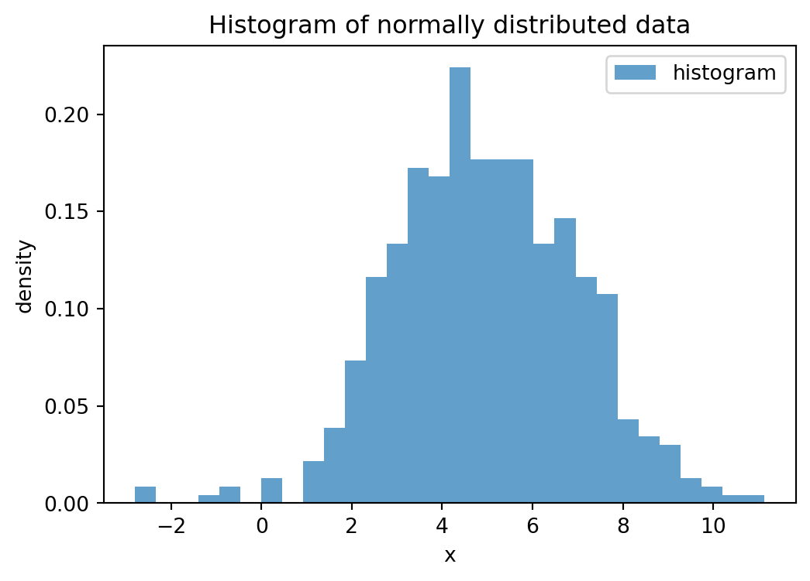
8.8 Box plots (boxplot)
A box plot summarizes the distribution of a dataset by showing the median, quartiles, and outliers. It is useful for comparing distributions across groups.
plt.boxplot(data_list): box plot. Pass a list of arrays to compare multiple groups.
categories = ["A", "B", "C", "D"]
data_groups = [rng.normal(loc=m, size=50) for m in [0, 1, 2, 3]]
plt.figure(figsize=(6, 4))
plt.boxplot(data_groups, labels=categories)
plt.title("Box plot")
plt.show()/tmp/ipykernel_1212828/322536015.py:5: MatplotlibDeprecationWarning: The 'labels' parameter of boxplot() has been renamed 'tick_labels' since Matplotlib 3.9; support for the old name will be dropped in 3.11.
plt.boxplot(data_groups, labels=categories)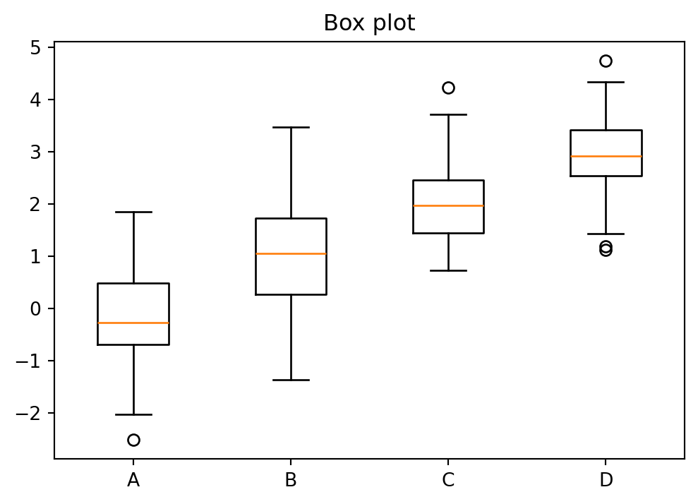
8.9 Subplots (subplots)
Subplots allow placing multiple plots in a single figure. Each subplot is an independent axes object.
fig, axes = plt.subplots(nrows, ncols, figsize=...): create a grid of subplots.plt.tight_layout(): automatically adjust spacing so labels do not overlap.
fig, axes = plt.subplots(1, 2, figsize=(10, 4))
axes[0].plot(np.linspace(0, 1, 50), np.linspace(0, 1, 50)**2)
axes[0].set_title("y = x^2")
axes[1].plot(np.linspace(0, 1, 50), np.sqrt(np.linspace(0, 1, 50)))
axes[1].set_title("y = sqrt(x)")
plt.tight_layout()
plt.show()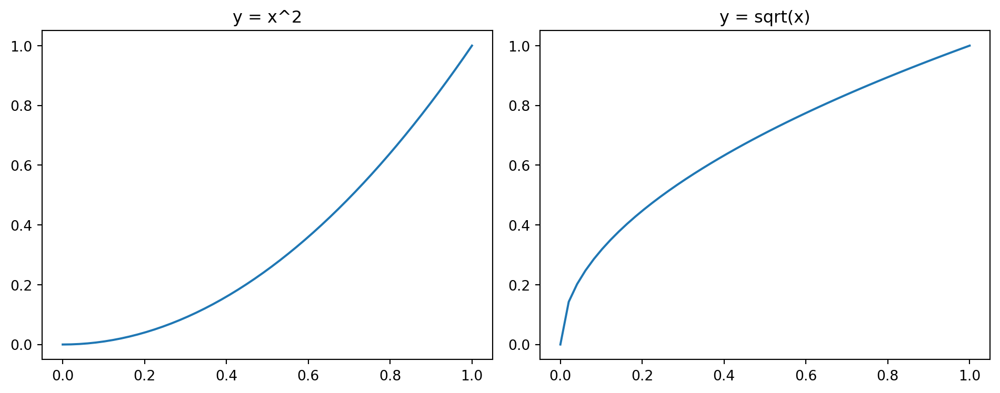
8.10 Heatmaps (imshow)
A heatmap displays a matrix of values as a grid of colored cells. It is useful for visualizing correlation matrices, confusion matrices, or any two-dimensional data where patterns emerge from color.
plt.imshow(matrix, cmap=...): display a matrix as a colored grid. Useplt.colorbar()to add a color legend.
# heatmap of a correlation matrix
data = rng.normal(size=(100, 4))
data[:, 1] += 0.8 * data[:, 0] # introduce correlation between columns 0 and 1
labels = ["A", "B", "C", "D"]
corr = np.corrcoef(data, rowvar=False)
fig, ax = plt.subplots(figsize=(5, 4))
im = ax.imshow(corr, cmap="coolwarm", vmin=-1, vmax=1)
ax.set_xticks(range(4))
ax.set_xticklabels(labels)
ax.set_yticks(range(4))
ax.set_yticklabels(labels)
# annotate each cell with the numeric value
for i in range(4):
for j in range(4):
ax.text(j, i, f"{corr[i, j]:.2f}", ha="center", va="center", fontsize=10)
fig.colorbar(im, label="Correlation")
ax.set_title("Correlation matrix")
plt.tight_layout()
plt.show()
8.11 Error bar plots (errorbar)
An error bar plot shows data points together with their uncertainty — for example, the mean of each group with the standard deviation or a confidence interval. This is common in scientific and statistical contexts.
plt.errorbar(x, y, yerr=...): plot data points with error bars (vertical by default; usexerrfor horizontal).
# error bar plot: group means with standard deviations
groups = ["Control", "Treatment A", "Treatment B", "Treatment C"]
means = [5.1, 6.3, 5.8, 7.2]
stds = [0.9, 1.2, 0.7, 1.1]
plt.figure(figsize=(6, 4))
plt.errorbar(groups, means, yerr=stds, fmt="o", capsize=5, capthick=1.5,
markersize=8, color="#4878cf")
plt.ylabel("Response")
plt.title("Treatment C shows the highest response")
plt.show()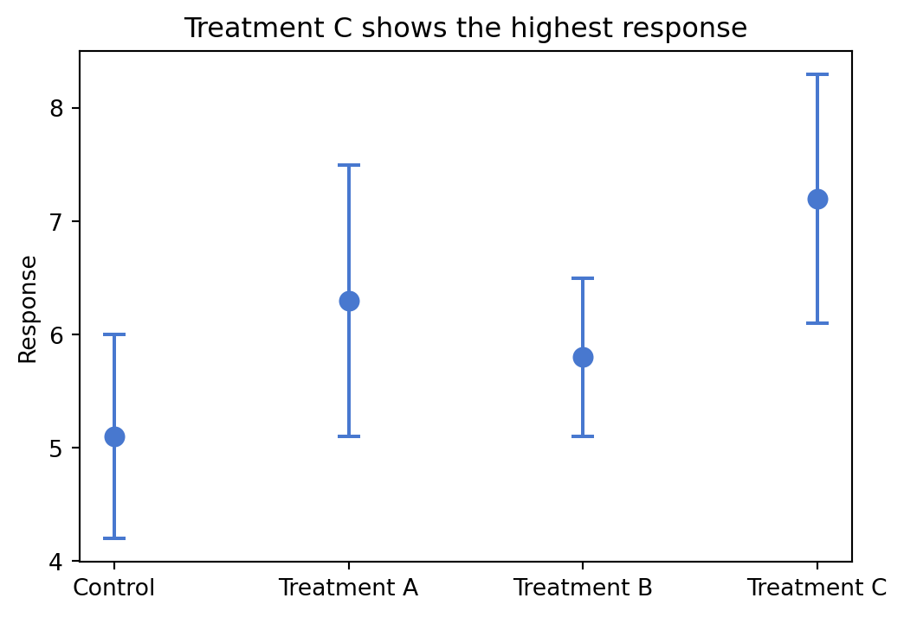
# horizontal error bars (e.g., confidence intervals)
fig, ax = plt.subplots(figsize=(6, 4))
y_pos = range(len(groups))
lower_err = [0.5, 0.7, 0.4, 0.6]
upper_err = [0.6, 0.8, 0.5, 0.7]
ax.errorbar(means, y_pos, xerr=[lower_err, upper_err], fmt="o", capsize=4,
color="#4878cf", markersize=8)
ax.set_yticks(y_pos)
ax.set_yticklabels(groups)
ax.set_xlabel("Response (95% CI)")
ax.set_title("Confidence intervals by group")
plt.tight_layout()
plt.show()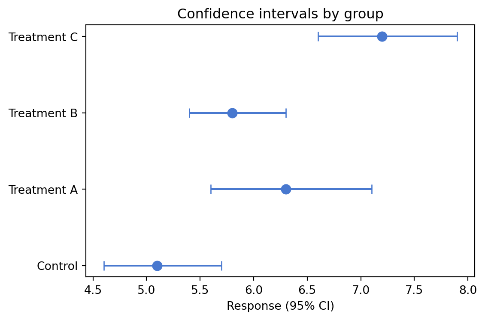